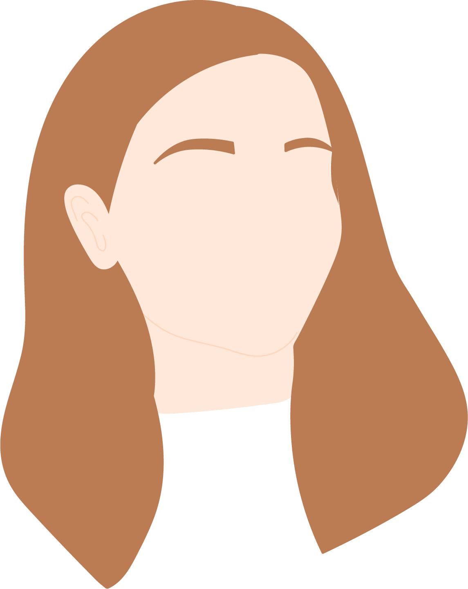

I am an amateur photographer with a passion for design, currently pursuing a MSc in Interaction Design and Technology at Chalmers in Gothenburg.
With a background in software engineering, I have a good understanding of the technical aspects of a digital product, but UX design is where my heart’s at. My dream is to become a UX designer who by her work makes a difference to the world, through design.
I have a passion for music and I have played various instruments since I was eight years old. Despite the dreams of my flute teacher, I enjoy the piano the most!
Now, with my master studies coming to an end in the summer of 2020, I’m looking for new challenges in the role as a UX Designer.
Don’t hesitate to contact me!